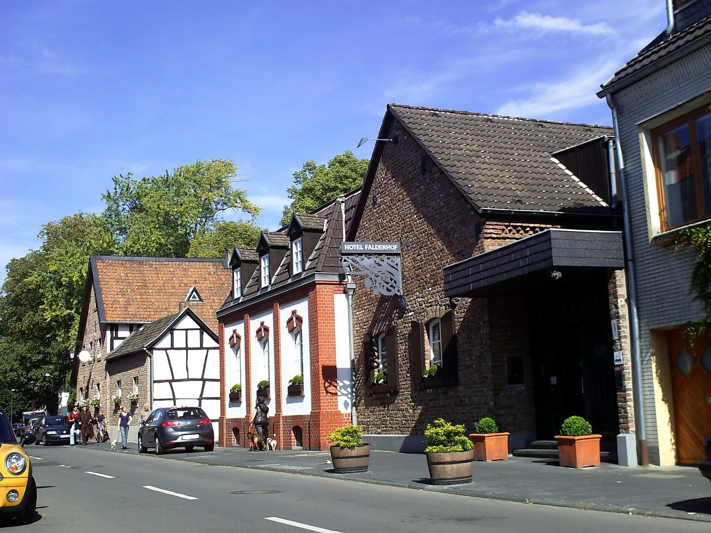
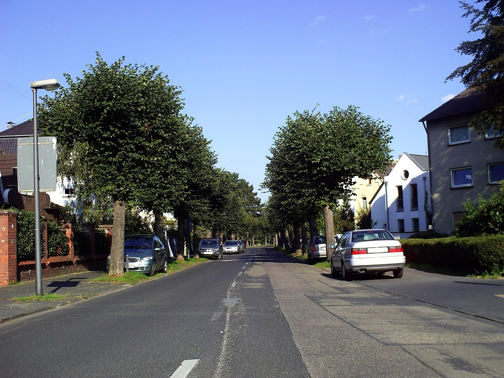
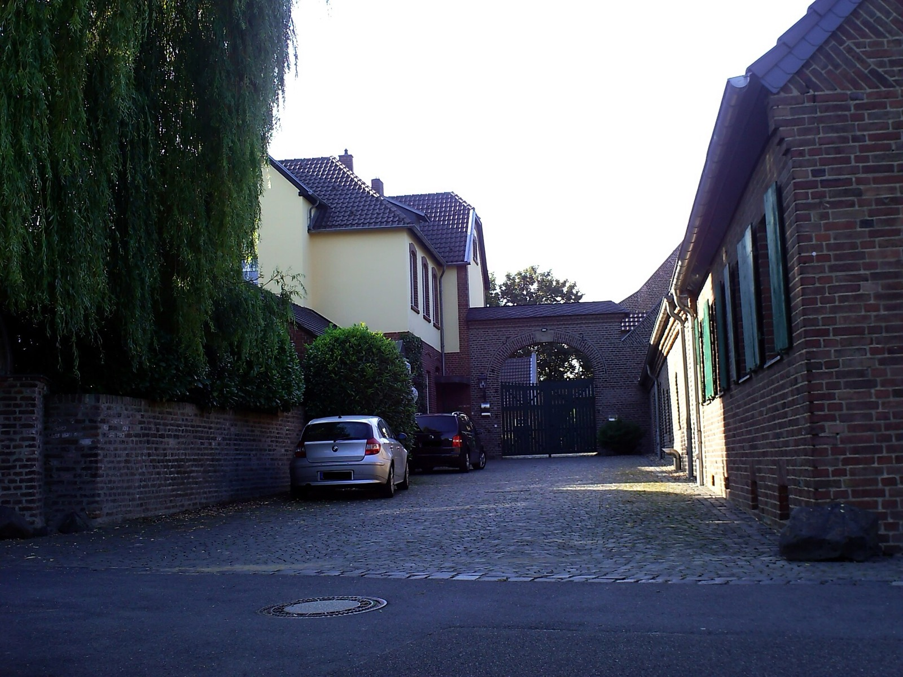
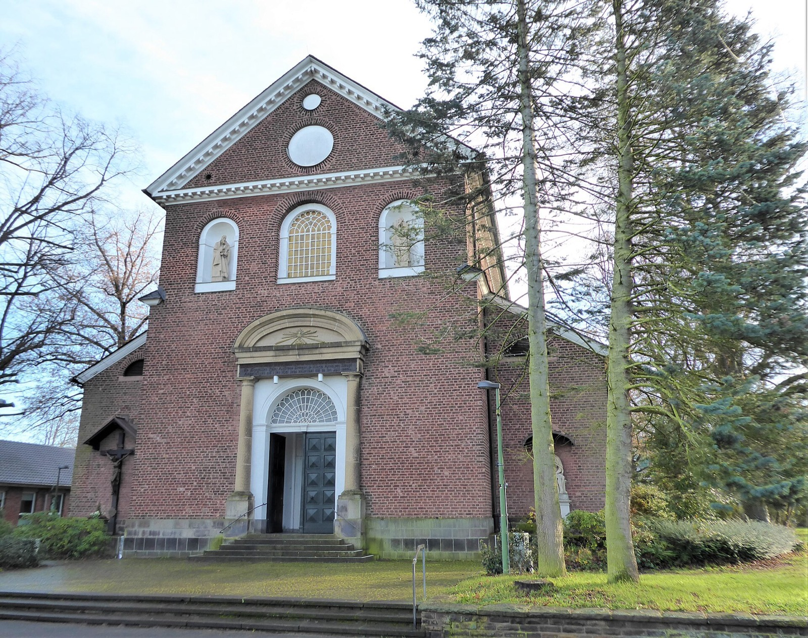
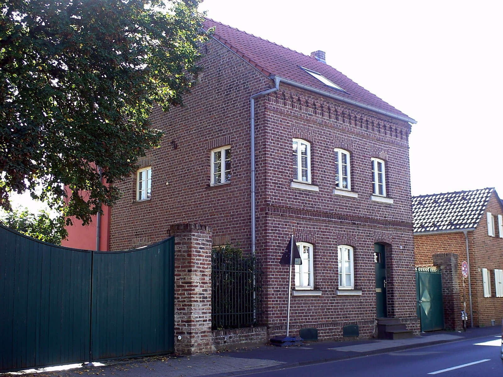

Immobilie in Köln-Sürth verkaufen?Manchmal kenne ich den Käufer schon.
Am Rodderweg habe ich eine vermietete Wohnung auf einem Erbbaugrundstück nach einer einzigen Besichtigung verkauft — an einen Investor, der genau so etwas suchte.
Was könnte Ihre Immobilie in Köln-Sürth erzielen?
In sechs Schritten zu einer realistischen Einschätzung. Kostenlos, unverbindlich und ohne Vertrag. Womit fangen wir an?
Andere Objektart wählenIn Sürth entscheidet nicht die Lage, sondern das Objekt
Für die meisten Kölner Stadtteile gilt eine einfache Regel: Wo der Boden teuer ist, sind auch die Immobilien teuer. In Sürth greift diese Regel nicht — und das lässt sich an zwei Zahlen zeigen, die aus derselben amtlichen Quelle stammen.
BORIS NRW weist für die Sürther Wohnbauflächen zum 1. Januar 2026 drei Bodenrichtwerte aus: 1.060, 1.120 und 1.320 Euro je Quadratmeter. Zwischen dem niedrigsten und dem höchsten liegen 25 Prozent. Das ist wenig. Zum Vergleich: In Rodenkirchen reichen die Bodenwerte über zehn Zonen von 930 bis 2.280 Euro, also um das Zweieinhalbfache.
Bei den Eigentumswohnungen ist es umgekehrt. Der Grundstücksmarktbericht 2026 hat für Sürth 37 Weiterverkäufe des Jahres 2025 ausgewertet. Der Durchschnitt lag bei 4.740 Euro je Quadratmeter. Die tatsächlichen Verkäufe reichten von 1.942 bis 9.233 Euro — der Faktor 4,75.
BORIS NRW zum 1. Januar 2026 und Gutachterausschuss für Grundstückswerte in der Stadt Köln, Grundstücksmarktbericht 2026 (Berichtsjahr 2025).
Die Spreizung der Wohnungspreise ist also fast viermal so groß wie die des Bodens. Für Eigentümer heißt das etwas sehr Konkretes: Die Frage „Wo in Sürth liegt Ihre Immobilie?" führt hier kaum weiter. Die Frage „Was genau ist es für eine Immobilie, und in welchem Zustand?" entscheidet über Hunderttausende.
Eine Wohnung mit 87 Quadratmetern — das ist die durchschnittliche Größe der 37 ausgewerteten Verkäufe — kostete am unteren Ende der Spanne rund 169.000 Euro und am oberen rund 803.000 Euro. Beide Male in Sürth, beide Male im selben Jahr.

Woran sich entscheidet, wo eine Wohnung in der Spanne landet
Der Grundstücksmarktbericht schlüsselt die Sürther Wohnungsverkäufe nach Baujahr auf. Das ist die brauchbarste Orientierung, die es für eine erste Einordnung gibt — und sie erklärt einen Teil der Spanne, wenn auch nicht die ganze.
| Baujahr | Ø je m² Wohnfläche | Abstand zum Durchschnitt |
|---|---|---|
| 1941 bis 1990 | 4.179 € | −11,8 % |
| ab 1991 | 4.936 € | +4,1 % |
| Neubau (5 Verkäufe) | 6.394 € | +34,9 % |
Bezugsgröße ist der Sürther Durchschnitt aller 37 Weiterverkäufe von 4.740 €/m². Die fünf Neubauverkäufe lagen bei durchschnittlich 923.902 Euro und rund 144 Quadratmetern.
Zwischen den Baujahresklassen liegen 18 Prozent, zwischen Bestand und Neubau knapp 35. Das erklärt einen Teil der Spanne — aber eben nur einen Teil. Von 1.942 bis 9.233 Euro sind es 375 Prozent. Der Rest verteilt sich auf Zustand, Modernisierungsstand, Etage, Aufzug, Balkon oder Terrasse, Stellplatz, Grundriss und darauf, ob eine Wohnung vermietet ist oder frei.
Wo läge Ihre Wohnung?
Wählen Sie Baujahr und Wohnfläche — das Feld rechnet den Durchschnitt Ihrer Baujahresklasse hoch und zeigt daneben, wo dieser Wert innerhalb der tatsächlichen Sürther Spanne liegt.
Aus welcher Zeit stammt das Gebäude?
87 m² ist die durchschnittliche Größe der 37 ausgewerteten Verkäufe.
Rechnerisch nach Ihrer Baujahresklasse
363.600 €
87 m² × 4.179 €/m² (Baujahr 1941 bis 1990)
Dieselbe Fläche an den Rändern der Sürther Spanne
- Günstigster Verkauf 2025 (1.942 €/m²)169.000 €
- Teuerster Verkauf 2025 (9.233 €/m²)803.300 €
Diese Rechnung ist eine Einordnung, keine Bewertung. Sie multipliziert einen Baujahresdurchschnitt mit einer Fläche und weiß nichts über Zustand, Etage, Ausstattung, Grundriss oder Vermietungssituation Ihrer Wohnung — also über genau das, was den Abstand zwischen 1.942 und 9.233 Euro ausmacht. Die kostenlose Bewertung klärt, wo Ihre Wohnung tatsächlich steht.
Bei den Häusern steht die Rangfolge auf dem Kopf
Für Sürth hat der Gutachterausschuss 2025 insgesamt 26 Hausverkäufe ausgewertet, verteilt auf drei Bauformen. Das Ergebnis widerspricht dem, was die meisten Eigentümer erwarten.
| Bauform | Verkäufe | Ø Kaufpreis | Ø je m² Wohnfläche |
|---|---|---|---|
| Reihenmittelhaus | 9 | 764.298 € | 5.779 € |
| Doppelhaushälfte, Reihenendhaus | 11 | 703.397 € | 5.354 € |
| Freistehendes Einfamilienhaus | 6 | 609.248 € | 4.378 € |
Grundstücksmarktbericht 2026. Bei den freistehenden Häusern lag die mittlere Wohnfläche bei 144 m² und die mittlere Grundstücksgröße bei 527 m².
Das freistehende Einfamilienhaus steht ganz unten — mit dem größten Grundstück, der größten Wohnfläche und trotzdem dem niedrigsten Preis. Ein Reihenmittelhaus kostete im Schnitt 155.050 Euro mehr als ein freistehendes Haus, bei zwölf Quadratmetern weniger Wohnfläche und ohne eigenes Grundstück in dieser Größenordnung.
Wie das zustande kommt
Die Erklärung liegt nicht in der Bauform, sondern im Zustand. Die Spanne bei den freistehenden Häusern reichte von 2.361 bis 6.818 Euro je Quadratmeter — auch hier fast der Faktor drei. Unter den sechs Verkäufen waren offenbar Objekte mit erheblichem Modernisierungsbedarf, wie sie in einem gewachsenen Ort mit altem Baubestand regelmäßig auf den Markt kommen.
Ein modernisiertes Reihenhaus mit gutem Grundriss ist für eine Familie unmittelbar bezugsfertig. Ein freistehendes Haus aus den 1960er Jahren mit alter Heizung, einfach verglasten Fenstern und ungedämmtem Dach ist es nicht — auch wenn es auf 527 Quadratmetern steht. Der Käufer rechnet die Modernisierungskosten vom Preis ab, und zwar großzügig.
Eine Einschränkung gehört dazu: Sechs Verkäufe sind eine schmale Grundlage. Ein einzelner sehr günstiger oder sehr teurer Verkauf verschiebt den Durchschnitt spürbar. Als Beleg dafür, dass die Bauform allein nichts über den Preis sagt, taugt die Zahl trotzdem.
Drei Bodenzonen — und was zwischen ihnen liegt
Für ein Grundstück ist der Bodenrichtwert der Ausgangspunkt jeder Einordnung. In Sürth gelten zum 1. Januar 2026 drei Werte für Wohnbauflächen. Der Median liegt bei 1.120 Euro je Quadratmeter.
| Bodenrichtwert | 600 m² | 800 m² | 1.000 m² |
|---|---|---|---|
| 1.060 €/m² | 636.000 € | 848.000 € | 1.060.000 € |
| 1.120 €/m² (Median) | 672.000 € | 896.000 € | 1.120.000 € |
| 1.320 €/m² | 792.000 € | 1.056.000 € | 1.320.000 € |
| Unterschied | 156.000 € | 208.000 € | 260.000 € |
BORIS NRW, Bodenrichtwerte zum 1. Januar 2026. Rechnerische Werte für ein typisiertes Grundstück.
Auch wenn die Sürther Bodenspreizung im Vergleich zu anderen Stadtteilen gering ausfällt: In Euro gerechnet geht es bereits bei einem durchschnittlichen Grundstück um einen sechsstelligen Betrag. Welche Zone für Ihr Grundstück gilt, sollte deshalb vor jeder Preisüberlegung geklärt sein.
Der Bodenrichtwert ist dabei ein Ausgangspunkt und kein Verkaufspreis. Er beschreibt ein typisiertes Grundstück in der jeweiligen Zone. Zuschnitt, Bebaubarkeit, mögliche Teilbarkeit, Erschließung, Baulasten und im Grundbuch eingetragene Rechte können den tatsächlichen Wert erheblich verschieben.
Für unbebaute Grundstücke weist der Grundstücksmarktbericht keine eigene Fallzahl allein für Sürth aus. Für den gesamten Stadtbezirk Rodenkirchen wurden 2025 fünfzehn Grundstücke für den individuellen Wohnungsbau, fünf für den Geschosswohnungsbau und drei gewerbliche Baugrundstücke erfasst. Diese Zahlen als Sürther Verkäufe auszugeben, wäre unseriös — sie beziehen sich auf ein Gebiet, das von Bayenthal bis zur Stadtgrenze reicht.
Rodderweg 50: verkauft nach einer einzigen Besichtigung
Ein Beispiel aus meiner eigenen Praxis, das zugleich ein Thema berührt, das in Sürth häufiger vorkommt als in den meisten Kölner Stadtteilen: das Erbbaurecht.
Rodderweg 50, Köln-Sürth
- Objekt
- Eigentumswohnung, 3 Zimmer, vermietet
- Besonderheit
- Sondernutzungsrecht Tiefgaragenstellplatz
- Grundstück
- Erbbaurecht, rund 150 Jahre Restlaufzeit
- Besichtigungen
- eine
Der Verkauf gelang nach einer einzigen Besichtigung. Das lag nicht daran, dass die Wohnung zu günstig angeboten worden wäre, und auch nicht an einem glücklichen Zufall bei den Portalanfragen.
Der Käufer war ein Investor aus meinem Netzwerk, der gezielt eine Eigentumswohnung in genau dieser Lage suchte. Suchprofil, Objektart und Anlageziel passten, und seine Bonität war bereits vorher bekannt. Die entscheidende Arbeit lag also vor der Besichtigung, nicht danach.
Warum ein Erbbaurecht mehr Abstimmung verlangt
Bei einem Erbbaurecht besitzen Sie nicht das Grundstück, sondern ein langfristiges, im Grundbuch gesichertes Recht, ein fremdes Grundstück zu nutzen und darauf ein Gebäude zu haben. Dafür wird in der Regel ein Erbbauzins an den Grundstückseigentümer gezahlt.
Beim Verkauf reicht es deshalb nicht, Wohnfläche, Kaufpreis und Hausgeld zu kennen. Zu prüfen sind Restlaufzeit, Erbbauzins, die Regelungen des Erbbaurechtsvertrags und die Frage, ob für den Verkauf Zustimmungen erforderlich sind. Am Rodderweg 50 habe ich mich sowohl mit dem Erbbaurechtsgeber als auch mit dem Erbbauberechtigten abgestimmt.
Für den Eigentümer bedeutete das vor allem: Er musste sich nicht selbst mit jedem Beteiligten auseinandersetzen. Ein Erbbaurecht ist kein Grund, eine Immobilie als problematisch anzusehen — es ist ein Verkaufsfall, bei dem Unterlagenkenntnis und Koordination den Unterschied machen.

Die Lagen, auf die es in Sürth ankommt
Auch wenn der Boden in Sürth vergleichsweise gleichmäßig bewertet ist, heißt das nicht, dass die Lage keine Rolle spielt. Sie wirkt nur anders: nicht über den Bodenrichtwert, sondern über die Frage, welche Käufergruppe sich für eine Adresse überhaupt interessiert.
- Am Rheinufer
- Für Käufer, die bewusst die Nähe zum Wasser suchen. Entscheidend ist hier selten die Adresse allein, sondern Ausrichtung, Ausblick, Ruhe und ob eine Terrasse oder ein Balkon den Bezug zum Rhein tatsächlich einlöst.
- Sürther Hauptstraße
- Nähe zum Ortskern, kurze Wege, Versorgung zu Fuß. Innerhalb derselben Straße unterscheiden sich ruhige und stärker befahrene Abschnitte allerdings deutlich — das gehört in jede ehrliche Einordnung.
- Falderstraße
- Gewachsener Bereich am historischen Kern mit dem Falderhof. Hier trifft alter Bestand auf spätere Ergänzungen, was die Bandbreite an Objektarten und Zuständen groß macht.
- Rodderweg
- Geschosswohnungsbau, teilweise auf Erbbaugrundstücken. Für Kapitalanleger interessant — hier liegt auch die Wohnung, die ich selbst verkauft habe.
- Unter Buschweg
- Bei Eigentumswohnungen lohnt der genaue Blick: Größe, Balkon oder Terrasse, Stellplatz, Grundriss und Vermietungsstand entscheiden hier über sehr verschiedene Käufergruppen.
Was in Sürth dagegen selten weiterhilft, sind Formulierungen wie „begehrte Lage" oder „attraktive Wohnlage". Sie erklären einem Käufer nichts. Die Frage, die eine Vermarktung beantworten muss, lautet: Warum sollte genau diese Adresse für genau diese Käufergruppe interessant sein?

Renovieren oder so verkaufen, wie es ist?
Diese Frage stellt sich in Sürth häufiger als anderswo — weil der Zustand hier, wie die Hauszahlen zeigen, stärker über den Preis entscheidet als die Bauform oder die Adresse.
Eine pauschale Antwort gibt es nicht. Was sich aber sagen lässt: Kleine Maßnahmen wirken oft überproportional. Ein frischer Wandanstrich verändert den Eindruck bei Besichtigungen erheblich, ein stark abgenutzter Bodenbelag zieht dagegen den gesamten Raumeindruck nach unten. Beides kostet vergleichsweise wenig.
Bei größeren Maßnahmen ist die Rechnung eine andere. Ein neues Bad oder eine hochwertige Küche kann schnell mehrere zehntausend Euro kosten — und der Käufer muss Ihren Geschmack nicht teilen. Die Frage lautet deshalb nicht „Wird die Immobilie dadurch schöner?", sondern „Zahlt der Markt mir diese Investition beim Verkauf zurück?". Lässt sich das nicht überzeugend beantworten, ist der Verkauf im vorhandenen Zustand oft die wirtschaftlich bessere Entscheidung.
Bei energetischen Themen — Heizung, Fenster, Dach, Dämmung — gilt dasselbe in verschärfter Form. Die Kosten sind hoch, und ob sie sich im Preis niederschlagen, hängt stark davon ab, welche Käufergruppe für die Immobilie infrage kommt. Einen erforderlichen Energieausweis organisiere ich für den Verkauf.
Bevor Sie mehrere tausend Euro investieren, lohnt ein Gespräch. Ich sage Ihnen offen, welche Maßnahmen ich für sinnvoll halte, welche ich lassen würde und welche Käufer auch für den aktuellen Zustand infrage kommen. Wenn Arbeiten sinnvoll sind, kann ich auf Handwerks- und Architektenkontakte zurückgreifen.

Sürth in Zahlen
Marktdaten Köln-Sürth
- Bodenrichtwert
- 1.060–1.320 €/m²Median 1.120 · 3 Zonen · Stichtag 1.1.2026
- Wohnung, Weiterverkauf
- 4.740 €/m²37 Kaufverträge 2025
- Wohnung, Neubau
- 6.394 €/m²5 Kaufverträge 2025
Amtliche Werte — Quellen und Methodik.
Bebauung in Köln-Sürth
1059 als Soretha erstmals erwähnt, bis ins 19. Jahrhundert von Ackerbau, Fischfang und Weinanbau geprägt. Mit der Sürther Maschinenfabrik setzte die Industrialisierung ein, darauf folgte ab 1900 moderner Wohnungsbau in Form von Villenkolonien und Einfamilienhäusern. Kernstück ist die zwischen 1910 und 1912 nach Plänen von Max Stirn erbaute Landhaus-Kolonie an Ulmenallee, Rotdornallee und Ober Buschweg — eine der wenigen geschlossen geplanten Villenbebauungen im Kölner Raum, weitgehend original erhalten und teilweise denkmalgeschützt.
Lage und Infrastruktur
Der Bahnhof Köln-Sürth liegt an der Rheinuferbahn und wird von den Stadtbahnlinien 16 und 17 bedient. Vereinsleben prägt den Ort: der FC Rheinsüd Köln aus der Fusion des VfL Sürth mit dem TV Rodenkirchen, der TV Sürth 05 für den Breitensport, dazu zwei Karnevalsgesellschaften.
Wohnungsbestand in Zahlen
Von den 5.221 Haushalten bestehen 42 % aus einer Person, 22 % leben mit Kindern. Köln liegt bei 52 % beziehungsweise 18 %. Mit 97,8 m² je Wohnung liegt der Bestand weit über dem Kölner Mittel von 77,3 m² — hier stehen Familienwohnungen und Häuser. Familientaugliche Grundrisse ab drei Zimmern finden hier schnell Käufer.
Alle genannten Werte ordnen ein, sie ersetzen keine Bewertung. Den Wert Ihres Objekts ermitteln wir kostenlos und unverbindlich, auf Wunsch bei einem Termin bei Ihnen.
Die wichtigsten Fragen vor dem Verkauf in Sürth
Der Durchschnitt aus 37 ausgewerteten Verkäufen des Jahres 2025 liegt bei 4.740 Euro je Quadratmeter. Für Ihre Wohnung sagt das allerdings weniger als anderswo: Die tatsächlichen Verkäufe reichten von 1.942 bis 9.233 Euro. Entscheidend sind Baujahr, Zustand, Modernisierungsstand, Etage, Aufzug, Balkon oder Terrasse, Stellplatz und ob die Wohnung vermietet ist.
Weil die Bauform weniger über den Preis sagt als der Zustand. Die sechs ausgewerteten freistehenden Häuser lagen im Schnitt bei 609.248 Euro, die neun Reihenmittelhäuser bei 764.298 Euro. Unter den freistehenden Objekten waren offenbar Häuser mit erheblichem Modernisierungsbedarf, deren Kosten Käufer vom Preis abziehen. Bei sechs Verkäufen ist die Zahl allerdings schmal — ein einzelner Verkauf verschiebt den Schnitt spürbar.
BORIS NRW weist für die Sürther Wohnbauflächen zum 1. Januar 2026 drei Werte aus: 1.060, 1.120 und 1.320 Euro je Quadratmeter. Welcher für Ihr Grundstück gilt, hängt von der Richtwertzone ab. Bei 600 Quadratmetern liegen zwischen der günstigsten und der teuersten Zone rechnerisch 156.000 Euro, bei 1.000 Quadratmetern 260.000 Euro.
Nein. Der Bodenrichtwert beschreibt ein typisiertes Grundstück in der jeweiligen Zone. Zuschnitt, Bebaubarkeit, mögliche Teilbarkeit, Erschließung, Baulasten und eingetragene Rechte können den tatsächlichen Wert deutlich verschieben — nach oben wie nach unten.
Ja, sie verlangt aber mehr Fachkenntnis und Abstimmung. Am Rodderweg 50 habe ich eine vermietete Dreizimmerwohnung auf einem Erbbaugrundstück verkauft, mit rund 150 Jahren Restlaufzeit. Zu klären waren Erbbauzins, Vertragsbedingungen und mögliche Zustimmungserfordernisse, und es musste sowohl mit dem Erbbaurechtsgeber als auch mit dem Erbbauberechtigten gesprochen werden. Der Verkauf gelang nach einer einzigen Besichtigung.
Vereinfacht: Sie besitzen nicht das Grundstück, sondern ein langfristiges, im Grundbuch gesichertes Recht, ein fremdes Grundstück zu nutzen und darauf ein Gebäude zu haben. Dafür wird in der Regel ein Erbbauzins an den Grundstückseigentümer gezahlt. Beim Verkauf sind Restlaufzeit, Erbbauzins und die Regelungen des Vertrags zu prüfen.
Nicht pauschal. Entscheidend ist, ob eine Investition voraussichtlich mehr einbringt, als sie kostet. Ein frischer Anstrich oder ein erneuerter Bodenbelag verändert den ersten Eindruck oft erheblich und kostet vergleichsweise wenig. Ein neues Bad oder eine neue Küche für mehrere zehntausend Euro zahlt der Markt dagegen nicht zwangsläufig zurück — zumal der Käufer Ihren Geschmack nicht teilen muss.
Nein. Häufig ist nicht die Renovierung die Lösung, sondern die passende Käufergruppe. Projektentwickler achten auf Grundstück und Entwicklungsmöglichkeiten, Fix-and-Flip-Investoren suchen gezielt Objekte mit Modernisierungsbedarf. Was für einen Eigennutzer ein Ausschlusskriterium ist, kann für einen Investor der eigentliche Grund zu kaufen sein.
Dann klären wir zuerst, was tatsächlich gebraucht wird. Je nach Fall beschaffe ich Unterlagen über Notar, Bauamt, Amtsgericht oder Katasteramt. Einen erforderlichen Energieausweis organisiere ich; fehlende oder veraltete Bauzeichnungen kann mein Architektenkontakt prüfen und neu erstellen.
Nein. Vor einer breiten Veröffentlichung prüfe ich, ob bereits vorgemerkte Käufer oder Investoren infrage kommen. Genau so kam der Verkauf am Rodderweg 50 zustande. Wenn das nicht trägt oder eine breite Ansprache sinnvoller ist, folgen Portale, Website und soziale Medien.
Nein. Die Bewertungsanfrage ist kostenlos und unverbindlich. Durch die Anfrage entsteht kein Maklerauftrag.
Bildnachweis: Falderhof, Bahnhofstraße, Carl-von-Linde-Straße, Gut Mönchhof und Hauptstraße 28: Marhelle, CC BY-SA 3.0 · St. Remigius: Chris06, CC BY-SA 4.0, alle über Wikimedia Commons. Marktdaten: Gutachterausschuss für Grundstückswerte in der Stadt Köln (Grundstücksmarktbericht 2026, Berichtsjahr 2025) und BORIS NRW zum Stichtag 1. Januar 2026.